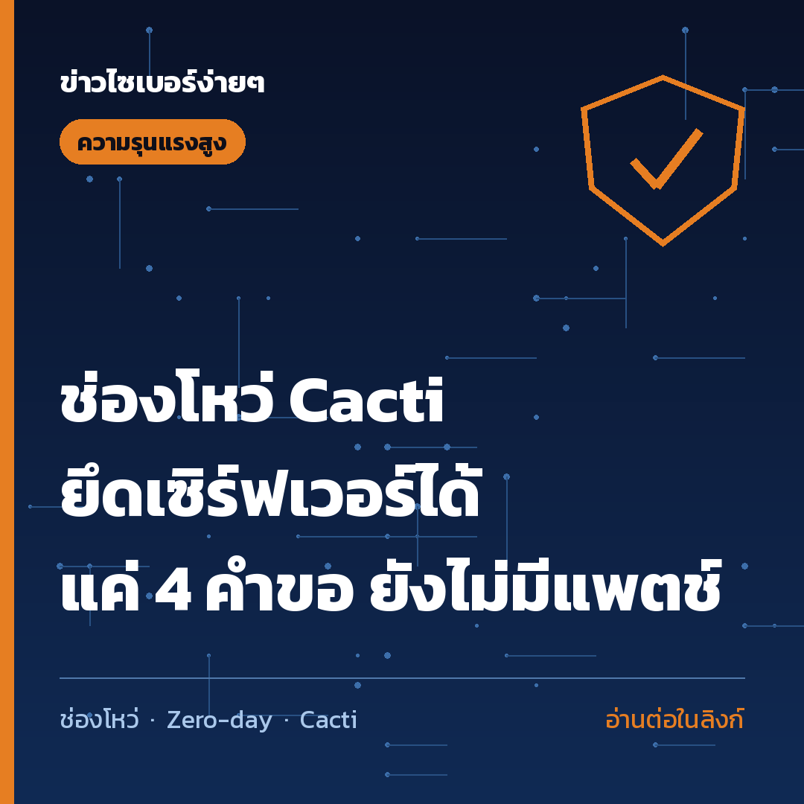

ช่องโหว่ Zero-day ใน Cacti ยึดเซิร์ฟเวอร์ได้ด้วย 4 คำขอ หากเปิดบัญชี guest
สรุปสั้นๆ
นักวิจัยเปิดเผยวิธีเจาะโปรแกรมมอนิเตอร์เครือข่าย Cacti เวอร์ชันล่าสุด 1.2.31 ให้รันคำสั่งบนเซิร์ฟเวอร์ได้โดยไม่ต้องล็อกอิน แค่ส่งคำขอเว็บ 4 ครั้ง หากเปิดใช้บัญชี guest ไว้ ตอนนี้ยังไม่มีแพตช์

📰 เกิดอะไรขึ้น
Cacti เป็นโปรแกรมโอเพนซอร์สยอดนิยมสำหรับดูกราฟและสถานะของอุปกรณ์เครือข่าย นักวิจัยที่ใช้ชื่อ "ek0ms savi0r" เผยแพร่โค้ดสาธิตการโจมตี (PoC) ชื่อ 4HTTP2SHELL และ 4HTTP2ROOT ซึ่งยังไม่มีหมายเลข CVE
ช่องโหว่นี้กระทบ Cacti 1.2.31 ซึ่งเป็นเวอร์ชันล่าสุด เมื่อเปิดใช้บัญชี guest (ผู้เยี่ยมชมแบบไม่ต้องล็อกอิน) คนร้ายใช้สิทธิ์ guest เขียนข้อความแปลกปลอมลงในค่าตั้ง "จำนวนกราฟต่อหน้า" ที่ควรเป็นตัวเลข แต่ Cacti ไม่ได้ตรวจสอบ
ข้อความนั้นกลายเป็นคำสั่ง SQL ที่ถูกรันเมื่อเปิดหน้าดูกราฟ คนร้ายใช้มันแก้ข้อมูลในตาราง poller แล้วเรียกหน้ากราฟแบบเรียลไทม์ ซึ่งจะนำค่าที่ถูกแก้ไปรันเป็นคำสั่งบนเซิร์ฟเวอร์ทันที
เมื่อยึด Cacti ได้ คนร้ายอาจเข้าถึงรหัสผ่านและข้อมูลการเชื่อมต่อของเราเตอร์ สวิตช์ และเซิร์ฟเวอร์อื่น ๆ ที่ Cacti เก็บไว้ ใช้เป็นฐานเจาะเครือข่ายต่อ หรือปิดการแจ้งเตือนเพื่อซ่อนตัว
🔎 ข้อมูลเพิ่มเติมจากแหล่งอื่น
Threadlinqs ระบุว่าบัญชี guest ใน Cacti ปิดไว้เป็นค่าเริ่มต้น จึงกระทบเฉพาะระบบที่เปิดใช้เอง และการรันคำสั่งในระดับ root จะเกิดขึ้นได้เฉพาะเมื่อ Cacti ถูกรันด้วยสิทธิ์ root
Previdian ทดสอบซ้ำในห้องแล็บกับ Cacti 1.2.31 และยืนยันว่าโค้ดสาธิตใช้งานได้จริง ณ วันที่ 27 พ.ย. 2026 ยังไม่มีรายงานการโจมตีจริง และยังไม่มีแพตช์อย่างเป็นทางการ
คำแนะนำเพิ่มเติมคือให้รัน Cacti ด้วยบัญชีที่ไม่ใช่ root ตรวจตาราง settings_user และ poller_item และเปลี่ยนรหัสผ่านอุปกรณ์ที่เก็บไว้ใน Cacti หากสงสัยว่าถูกเจาะ
👥 ใครได้รับผลกระทบ
- ผู้ดูแลระบบที่ใช้ Cacti 1.2.31 และเปิดบัญชี guest ไว้
- องค์กรที่เปิดหน้าเว็บ Cacti ให้เข้าถึงได้จากอินเทอร์เน็ตหรือเครือข่ายกว้าง
- อุปกรณ์เครือข่ายทั้งหมดที่ Cacti เก็บรหัสผ่านไว้ อาจถูกโจมตีต่อ
✅ ควรทำอย่างไร
- ปิดบัญชี guest ใน Cacti ทันที หากไม่จำเป็นต้องใช้
- จำกัดการเข้าถึงหน้าเว็บ Cacti ให้เฉพาะเครือข่ายจัดการหรือผ่าน VPN เท่านั้น
- ตรวจค่าตั้งใน poller ว่ามีคำสั่งแปลกปลอมหรือไม่ และรัน Cacti ด้วยบัญชีที่ไม่ใช่ root
- ติดตามประกาศจากทีม Cacti และติดตั้งแพตช์ทันทีที่ออก
- หากสงสัยว่าถูกเจาะ ให้เปลี่ยนรหัสผ่านของอุปกรณ์เครือข่ายทั้งหมดที่ Cacti เก็บไว้
📖 คำศัพท์น่ารู้
- Zero-day
- ช่องโหว่ที่ถูกเปิดเผยหรือถูกใช้โจมตีก่อนที่ผู้พัฒนาจะออกแพตช์แก้
- RCE
- Remote Code Execution การที่คนร้ายสั่งรันคำสั่งบนเครื่องเหยื่อได้จากระยะไกล
- SQL Injection
- การแทรกคำสั่งฐานข้อมูลผ่านช่องกรอกข้อมูลที่ระบบไม่ได้ตรวจสอบ
- PoC
- Proof of Concept โค้ดตัวอย่างที่พิสูจน์ว่าช่องโหว่ใช้โจมตีได้จริง
แหล่งอ้างอิง
- Unpatched Cacti Zero-Day Enables RCE in Just Four HTTP Requests via Guest Access The Hacker News (ข่าวต้นฉบับ)
- Cacti 4HTTP2ROOT (4HTTP2SHELL) Zero-Day: Unauthenticated Command Execution via Stored Second-Order SQL Injection in Guest Profile Setting - Threadlinqs intel.threadlinqs.com
- Cacti Zero-Day Enables Unauthenticated RCE Through Guest Access in Four HTTP Requests - Mallory mallory.ai
บทความนี้เรียบเรียงเป็นภาษาไทยโดยใช้ AI ช่วยจากแหล่งข่าวด้านบน โปรดตรวจสอบรายละเอียดจากแหล่งอ้างอิงก่อนนำไปใช้